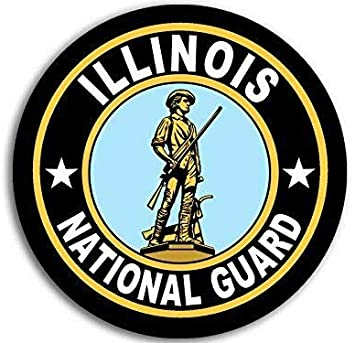
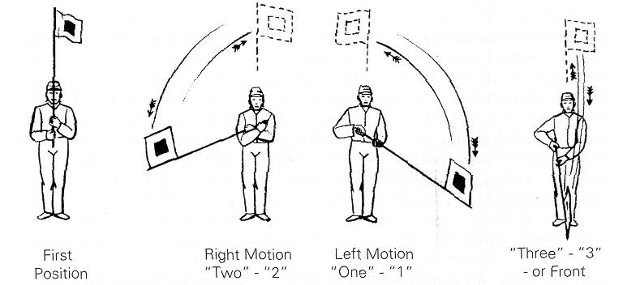

Two years following his graduation of High School, Will decided to enlist into the Illinois National Guard. In 2013 Will graduated from Basic Army Combat Training at Fort Benning Georgia. Upon completion of Basic Training, he was transported to Fort Gordon where he would attend Advanced Individual Training (AIT) where he graduated and became an Army Radio man.
Married:
During Middle School, unbeknownst to Will at the time, he would meet his bride to be. Will and Dehrika began to date during their Junior year of High School. The two of them shared a common interest in Board games and table top RPGs. After six years of dating, the two would tie the knot in April of 2015. To this day Will says he makes up fifty percent of what he hopes to be a one hundred percent happy mariage.
Goals:
Will is currently in attnedance to Richland Community College in pursuit of a BA in computer networking. Will hopes to be able to find a career dealing with databases, servers, or networks. Will hopes to one day be able to afford to go back to school to pursue a degree in physics with the hopes of working with/around Quantum Computing.